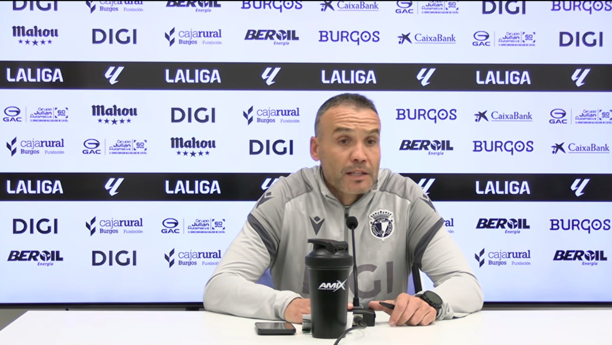

El entrenador del Burgos CF ha dado una rueda de prensa previa a su enfrentamiento en la Copa del Rey ante el CD Laredo.
El vasco ha comparecido esta tarde de miércoles en rueda de prensa para comentar la situación de la plantilla antes del encuentro ante los cántabros. Puso el énfasis en la dificultad que puede llegar a tener un partido de estas características y en cómo estos enfrentamientos ya han dejado fuera a equipos importantes. Además, también comentó el momento por el que pasan actualmente los jugadores que se encuentran lesionados y la posibilidad de dar minutos a algún futbolista de la cantera que ya ha entrenado con el primer equipo.
La rueda de prensa comenzó dando mensajes de ánimo y el pésame a las familias afectadas por el accidente de Utrera en Toledo.
No es un partido sencillo
El entrenador ha hecho especial hincapié en la dificultad de este encuentro, que no debe ser tomado a la ligera. Para él, el Burgos se enfrenta a un equipo que va a estar ultramotivado y que además estará más adaptado al campo de hierba artificial en el que se disputa el partido (aunque ha dejado claro que no quiere que esto se utilice como excusa en caso de derrota).
“No vamos confiados. Hemos visto muchos ejemplos en eliminatorias similares que se han complicado para el equipo de mayor categoría”
Según el análisis realizado por el propio Sergio Francisco, el Laredo es un equipo dominador al que le gusta tener el balón y controlar los tiempos del partido. Para contrarrestar esta táctica, los blanquinegros intentarán tener ellos la mayor parte de la posesión para así no dejar a los cántabros reinar en el encuentro. Además, mientras los rivales sean los que tengan el balón, los de Sergio Francisco buscarán ser más agresivos en la presión para incomodarlos lo máximo posible.
El momento de la plantilla
El primer jugador sobre el que le han preguntado al técnico es Jon Karrikaburu, al que le han diagnosticado una rotura muscular en el isquiotibial de la pierna derecha. El técnico lamentó la lesión del vasco que se encontraba cogiendo confianza en su mejor momento de la temporada. Además, el equipo sigue con las bajas de Lencina, Kevin y David. La buena noticia es que Marcelo, que había estado con molestias, entrará en la convocatoria si no hay ningún problema.
“Creo que es una oportunidad para demostrar que somos un grupo amplio, que todo el mundo está preparado, que tenemos una plantilla capaz de sujetar tres partidos en una semana.”
El entrenador también ve este partido como una oportunidad para darle minutos a algunos jugadores del Burgos «B» como Irian, David y Pablo.